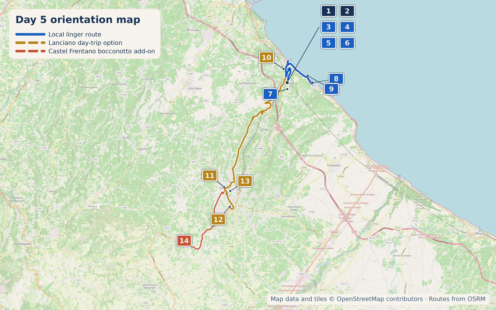

Overview
17 September 2026 is a Thursday. A deliberate no-driving day — the brief's whole philosophy in one stop. Do nothing at all, or take the one genuine day-trip option below. Both are legitimate; don't feel obligated to fill the day.
Stops
- Why stop: A converted former railway line running along the coast, passing directly by the most famous trabocchi — Turchino, Punta Torre, Cungarelle. Genuinely well-built cycling/walking infrastructure, not an informal path.
- Time required: As much or as little as you want
- Worth the detour: It's outside your door — no detour required

- Why stop: The headland associated with Gabriele D'Annunzio's time in San Vito Chietino, where he wrote Il Trionfo della Morte and drew the Trabocco Turchino into literature. 4.6★/1,955 reviews.
- Time required: 30–45 min

A genuine historic town, not a beach-resort day trip. The old centre is split into four medieval quarters — Lancianovecchia, Civitanova, Sacca, Borgo — each with its own coat of arms and flag, built across three hills.
Medieval botteghe, Porta San Biagio, and the Santuario del Miracolo Eucaristico make it significant as a historical curiosity regardless of religious interest. Optional, not a must.
Food detour: Bottega del Bocconotto in Castel Frentano, about 5km from Lanciano, was founded in 2008 by Claudia and Pierino Bucci using a recipe from grandmother "Sabbiuccia." Castel Frentano is the genuine historical origin town of the bocconotto; the authentic version here is almond-chocolate-cinnamon in a butter-free shortcrust shell, distinct from the custard/fruit versions elsewhere on this coast.
Coffee & Pasticceria
Genuinely excellent and right in town. Gambero Rosso specifically covered it for bocconotti — the local pastry shell filled with cacao, almonds, and grape jam. Reviews consistently call out both coffee and the pastry selection. Try the lemon cream version, singled out by Gambero Rosso as standout.
The reference bocconotto shop if you're doing the Lanciano day trip. Wide range of flavours — lemon, Nutella, Sachertorte, pistachio, grape, almond — sold in boxes of 5/9/12.
Lunch
A genuine find with real character. Owner Giuseppe is repeatedly described as warm and welcoming; one reviewer says they "stumbled upon this magical place by chance" and Giuseppe personally pointed them toward the Miracolo Eucaristico afterward. Exactly the sort of place the brief is asking for: not polished top-of-list, but a place with a person behind it.
Reuse Day 4's trabocco or Aldebaran for a lighter lunch version, or graze from Le Due Palme.
Local Speciality
Bocconotti — see Coffee & Pasticceria above. Celli ripieni, filled Abruzzo biscuits, are the other sweet worth seeking out.

What to Buy
4A box of bocconotti from Pasticceria Iezzi to take on the road — they travel well and are explicitly sold as souvenirs in boxes of 5, 9, or 12.
Hidden Gem
A real family-run place with an owner who takes a personal interest in whether you've seen the town properly, not just fed you.
Cool, Interesting & Quirky
3Cycling or walking a stretch of the Via Verde is the actual quirky-but-not-really-quirky answer here. It's a former railway line, so the grade is gentle and the old station buildings are still visible along the route — worth noticing rather than just pedaling past.
Accommodation
12Same prior-night base — no change of accommodation for the linger day.
Today's Route & Timing
Useful stop maps: Pasticceria Iezzi Trabocco Turchino Paolucci
Print timing summary: suggested 10:00am departure. Base local linger day is approximately 3–5h, finishing around 1:00–3:00pm before an open afternoon/evening. A coast-only rest day saves about 1–2h. The Lanciano day-trip option adds about 2–3h. A longer Via Verde cycle or beach pause adds 45–75 minutes; lunch at Paolucci adds 45–60 minutes; Castel Frentano adds 45–75 minutes. Under 8 hours is comfortable, 8–10 hours is long, and over 10 hours is a very long day.
Day 8 route map

Numbered points of interest
- B&B La Finestra Sui Trabocchi Accommodation / startVia Lungomare di Gualdo 31, 66038 Marina di San Vito CH, Italy
GPS: 42.3096483, 14.4445601 - Locanda dell'Adriatica Accommodation / food stopLargo Olivieri 5, 66038 Marina di San Vito CH, Italy
GPS: 42.3080635, 14.4459466 - Via Verde della Costa dei Trabocchi Cycle / walking routeVia Verde access near Via Lungomare di Gualdo, 66038 Marina di San Vito CH, Italy
GPS: 42.309420, 14.444940 - Pasticceria Iezzi Rossana Food stop / shopVia Nazionale Adriatica 6, 66038 San Vito Chietino CH, Italy
GPS: 42.3079185, 14.4453615 - Trabocco Vento di Scirocco Food stopVia Lungomare di Gualdo, 66038 Marina di San Vito CH, Italy
GPS: 42.3107684, 14.4462617 - Aldebaran da Rocco e Tommaso Food stopVia Lungomare di Gualdo 4, 66038 Marina di San Vito CH, Italy
GPS: 42.309154, 14.445654 - Le Due Palme Food stopVia San Rocco, 66038 San Vito Chietino CH, Italy
GPS: 42.292305, 14.443628 - Promontorio Dannunziano Viewpoint / historic siteContrada San Fino 31, 66038 San Vito Chietino CH, Italy
GPS: 42.2963673, 14.4649437 - Trabocco Punta Turchino Trabocco heritage / viewpointContrada Portelle, 66038 San Vito Chietino CH, Italy
GPS: 42.3006606, 14.4608939 - San Vito-Lanciano station TransportStazione San Vito-Lanciano, SP70, 66038 San Vito Chietino CH, Italy
GPS: 42.3048450, 14.4404829 - Lanciano old town / Piazza del Plebiscito Optional historic centrePiazza del Plebiscito, 66034 Lanciano CH, Italy
GPS: 42.2309626, 14.3902022 - La Bocconotteria Food stop / shopVia Ercole Tinari 6, 66034 Lanciano CH, Italy
GPS: 42.2186783, 14.3950227 - Trattoria Paolucci Food stopVia Dalmazia 30, 66034 Lanciano CH, Italy
GPS: 42.2284917, 14.3952913 - Bottega del Bocconotto Optional food heritage / shopCastel Frentano, 66032 Castel Frentano CH, Italy
GPS: 42.197430, 14.356420
OpenStreetMap-derived orientation map only, not turn-by-turn navigation. Use the Google Maps buttons above for live routing.
If Time Is Tight
Skip Lanciano. Stay on the coast, swim, walk a short stretch of the Via Verde.
If You've Got Half a Day
Do the Lanciano day trip — four quarters, lunch at Paolucci, back by train or car in time for an evening swim.
Skip It
🏆 Today's Winners
Road Trip Score
| Category | Rating |
|---|---|
| Food | ★★★★☆ |
| Coffee | ★★★★☆ |
| Atmosphere | ★★★★☆ |
| Photography | ★★★☆☆ |
| History | ★★★☆☆ |
| Young Traveller Appeal | ★★★★★ |
| Worth Detour | ★★★★☆ |